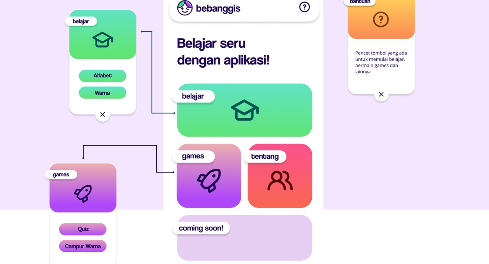
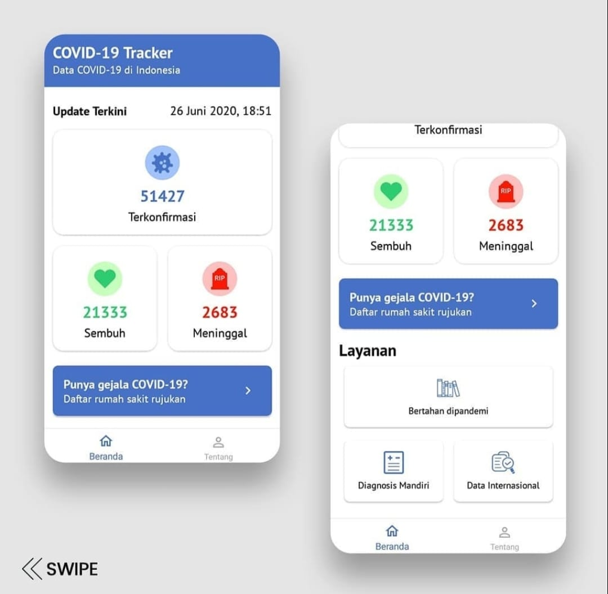
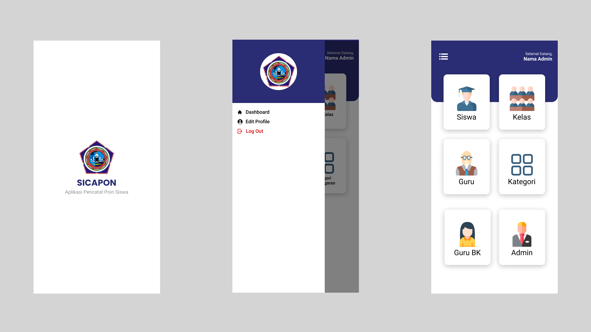

Bebanggis App

Bebanggis App (Belajar Bahasa Inggris) adalah aplikasi yang dibuat dengan tujuan untuk membantu anak - anak dalam belajar bahasa inggris. Bebanggis App menawarkan konten - konten yang menarik untuk anak - anak sehingga pada proses pembelajarannya anak - anak merasa seperti sedang bermain dan tidak tetekan untuk belajar bahasa asing.
Bebanggis App adalah project kolaborasi dengan teman saya, yaitu Shaddam Amru Hasibuan sebagai UI/UX designer dan saya sebagai Android Developernya.
Find Shaddam Amru Hasibuan at : Shaddam Amru Hasibuan - Bebanggis Project
Covid-19 Tracker

Covid-19 Tracker adalah aplikasi yang dibuat untuk mengetahui jumlah penyebaran Covid-19 di Indonesia dan juga di Internasional. Pada Aplikasi Covid-19 Traceker ini terdapat fitur edukasi tentang cara bertahan dimasa pandemi, melakukan diagnosis secara mandiri dan juga data rumah sakit rujukan apabila merasakan gejala Covid-19
Sicapon (Sistem Pencatatan Poin)

Sicapon atau Sistem Pencatatan Poin merupakan project kolaborasi dengan Dery Saeful Nurhalim. Sicapon app merupakan tugas akhir (TA) yang merupakan salah satu syarat kelulusan dari SMKN 1 Cimahi. Sesuai namanya, aplikasi ini diperuntukan untuk mencatat poin siswa. Pencatat poin ini digunakan untuk mencatat perilaku siswa, baik itu perilaku baik maupun yang kurang baik. Aplikasi ini menggunakan Firebase sebagai databasenya